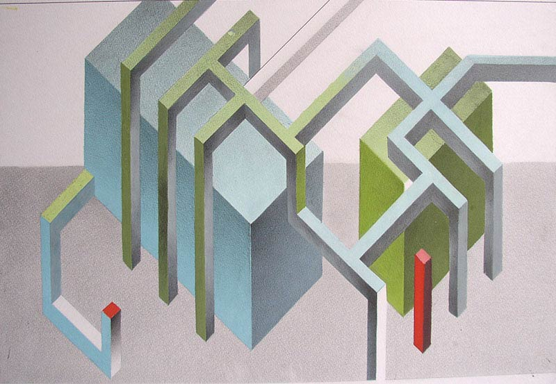
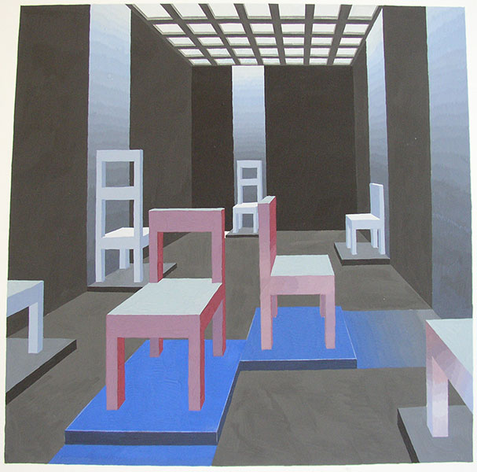

Специализация – графический дизайн.
- Плоскостное изображение единичной геометрической формыс окраской, выполняющей ту или иную формальную или содержательную задачу.
- Натюрморт из нескольких простых фигур на плоскости. Окраска фигур и фонов должна учитывать не только особенности лтдельных фигур, но и характер пространственных связей между ними и ограждающими поверхностями.
- Планшет "Пространство, форма и цвет", аналогично заданию для 1-й гр.
Авторы работ: Коровец С., Архангельская А., Рухлевич Н., Протасеня Е., Приболовец С., Калиновская А., Козлова И., Новикова Ю., Машкарова Ю., Цвирко С., Безляпович О., Уралова Т., Перцева В.
Просмотр 31 января 2005

«Завод»
Голубое пространство
«Завод»
«Змея»
Виртуальная реальность

«Ширмы»

«Невозможная фигура»
«Ленты»

«Стулья»
Знак Янь-Инь
«Ленты»
«Стулья»
Китайские мотивы